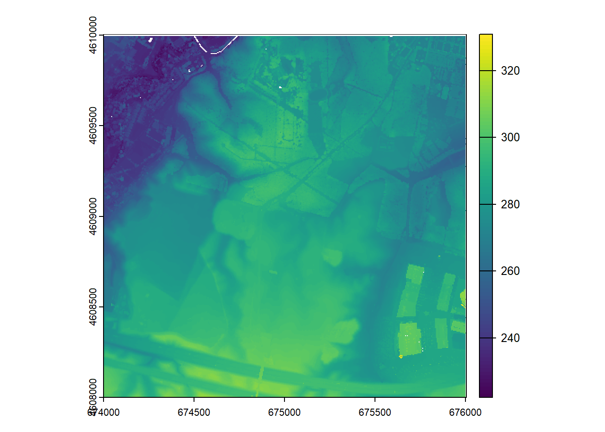

A través de este tutorial aprenderéis cómo generar Modelos Digitales de Terreno (MDT) a partir de datos LiDAR. Procesaremos datos del programa LiDAR PNOA que puedes obtener del centro nacional de descargas (CNIG). Veremos algunos de los aspectos básicos de la manipulación de datos LiDAR, es decir, acceder a los datos LiDAR, filtrarlos y producir capas raster a diferentes resoluciones espaciales.
Nota
NO cubriremos la clasificación LiDAR, sino que aprovecharemos la clasificación estándar ya disponible en los productos LiDAR PNOA. Para más información sobre este y otros aspectos puede consultar el manual del paquete lidR:
https://r-lidar.github.io/lidRbook/
A lo largo del documento te encontrarás con varios ejercicios que deberás resolver y entregar para la evaluación de esta asignatura.
Instalación y carga de las paquetes necesarios
El flujo de trabajo depende de una serie de paquetes que debemos descargar previamente usando install.packages("paquete"). La piedra angular del procedimiento radica en el paquete 'lidR', que contiene las funciones necesarias para manipular y procesar archivos tipo LiDAR. Usaremos varias bibliotecas auxiliares para realizar algunos cálculos específicos (moments) y procesar datos vectoriales y raster espaciales (sf, y terra).
#Instalar los paquetes# install.packages("lidR")# install.packages("terra")# install.packages("moments")# install.packages("sf")#Cargar paqueteslibrary(lidR)
Warning: package 'lidR' was built under R version 4.4.2
library(terra)
terra 1.7.83
Adjuntando el paquete: 'terra'
The following objects are masked from 'package:lidR':
area, crs, crs<-, is.empty, watershed
library(sf)
Linking to GEOS 3.12.1, GDAL 3.8.4, PROJ 9.3.1; sf_use_s2() is TRUE
Adjuntando el paquete: 'sf'
The following object is masked from 'package:lidR':
st_concave_hull
library(moments)
Acceso a datos LiDAR mediante ficheros *.laz
Para cargar y acceder a una nube de puntos LiDAR procedente de un único fichero, utilizamos la función readLAS(). El único parámetro requerido es una cadena de texto con la ruta y el nombre del archivo con el que vamos a trabajar. Una vez que el archivo está cargado en RStudio, podemos inspeccionar el contenido utilizando:
head(): previsualización de los datos contenidos en el fichero.
plot(): visualización 3D de la nube de retornos.
Usaremos algunas otras funciones para verificar la proyección espacial con crs(). En caso de obtener un CRS en blanco, necesitamos asignar el adecuado. Los datos espaciales de España deben estar proyectados en el sistema ETRS89 (UTM), utilizando el uso adecuado (Figura 1).
Figura 1: Distribución de husos en el CRS ETRS89
#Redaing a LAS filelas <-readLAS("D:/lidar_3/laz/PNOA_2010_LOTE1_ARA-NORTE_674-4610_ORT-CLA-CIR.laz")head(las@data)
Cada retorno (punto) en los archivos laz pertenece a una clase de cobertura terrestre. Estos datos han sido asignados mediante un proceso de clasificación por defecto que implica diferentes pasos que no cubriremos aquí. Baste decir que, a partir de esta clasificación, podemos diferenciar entre 2 y 8 = suelo, 3, 4 y 5 = vegetación y 6 = Edificación (Figura 2).
Figura 2: Clases definidas para la clasificación en el programa LiDAR-PNOA. Fuente: https://pnoa.ign.es/web/portal/pnoa-lidar/procesamiento-de-los-datos
Podemos seleccionar las clases deseadas utilizando filter_poi(), pasando un vector de categorías con %in%. Una vez filtrados, podemos inspeccionar la nube de puntos resultante utilizando plot().
# Selección de las clases de vegetación, edificación y suelolas <-filter_poi(las, Classification %in%c(2,3,4,5,6,8))plot(las,color="RGB")print("Ground and vegetation returns selected.")
[1] "Ground and vegetation returns selected."
A partir de aquí podemos empezar a generar modelos digitales de terreno a partir de los retornos adecuados.
Creación de un modelo digital de elevaciones (DEM)
El ejemplo más sencillo es crear un modelos digital de elevaciones o DEM. Los DEM son capas ráster cuyos píxeles almacenan la cota o altitud sobre el nivel de mar del suelo. Si queremos crear uno, basta con filtrar la nube de puntos para utilizar únicamente los retornos de suelo (clase 2) y llamar a la función rasterize_terrain() que pasa de retornos a pixeles. Podemos especificar el método de interpolación (IDW en el ejemplo) y la resolución espacial del píxel:
#Seleccionar solo los retornos de suelolas <-filter_poi(las, Classification %in%c(2,8))dem_idw <-rasterize_terrain(las, algorithm =knnidw(k =10L, p =2), res =5)
Warning: Interpolation of 53 points failed because they are too far from ground
points. Nearest neighbour was used but interpolation is weak for those points
plot(dem_idw)
Morfometría del terreno
Los MDT, como sabes, son representaciones digitales del terreno. Éstas incluyen no solo la elevación sino otras representaciones como la pendiente, la orientación o la acumulación del flujo. Vamos a ver cómo calcular algunos de ellos a partir de la funcion terrain() del paquete terra. Para más información puedes acudir a https://rdrr.io/cran/terra/man/terrain.html.
Pendiente
#Pendiente en ángulopendiente <-terrain(dem_idw, v="slope") plot(pendiente)
::: {.callout-tip title=“Ejercicio 1”} ¿Cómo podriamos calcular la pendiente en porcentaje en lugar de en grados? :::
Orientación
#Pendiente en ángulopendiente <-terrain(dem_idw, v="aspect") plot(pendiente)
Topográfic position index (TPI)
El Índice de Posición Topográfica (TPI) es una métrica utilizada en análisis del terreno para cuantificar la diferencia de elevación de un punto con respecto a la elevación promedio de su entorno. Se emplea para clasificar el relieve en diferentes tipos de formas de terreno, como valles, laderas y cimas.
La fórmula del TPI es:
\[
TPI = Z_{\text{punto}} - Z_{\text{promedio del entorno}}
\]
Donde:
( Z_{} ) es la elevación del punto de interés.
( Z_{} ) es la elevación media dentro de un radio determinado alrededor del punto.
La interpretación del TPI sería:
TPI > 0 → El punto está por encima del promedio local (puede indicar una cima o una cresta).
TPI ≈ 0 → El punto está al mismo nivel que el entorno (ladera uniforme o plano).
TPI < 0 → El punto está por debajo del promedio local (puede indicar un valle o depresión).
#Pendiente en ángulopendiente <-terrain(dem_idw, v="TPI") plot(pendiente)
Dirección del flujo de escorrentía
Dirección en grados respecto al norte hacia la que discurriría el flujo de escorrentía superficial en función del ángulo de inclinación del terreno.
#Pendiente en ángulopendiente <-terrain(dem_idw, v="flowdir") plot(pendiente)
Modelo digital de superficies (MDS)
El MDS es muy similar al MDE en el sentido de que es también una capa ráster cuyos píxeles representan altitud o cota. La diferencia radica en que en el MDS también se tiene en cuenta los objetos presentes en el territorio (edificio, árbolado…). A efectos de cálculo el procedimiento es sencillo, es igual que el MDE pero en este caso retenos los retornos de las clases que representan los objetos:
las <-readLAS("D:/lidar_3/laz/PNOA_2010_LOTE1_ARA-NORTE_674-4610_ORT-CLA-CIR.laz")las <-filter_poi(las, Classification %in%c(2,3,4,5,6,8))dsm_idw <-rast(grid_metrics(las, max(Z), res =5))plot(dsm_idw)

En este caso hemos recurrido a la función grid_metrics() del paquete rlidr. Esta función permite calcular métricas personalizadas a partir de datos LiDAR dentro de una cuadrícula espacial definida por el usuario. Se aplica sobre una nube de puntos para generar un raster con valores derivados de las características de los puntos en cada celda.
Parámetros:
las: Objeto de clase LAS o LAScatalog, que representa la nube de puntos LiDAR.
func: Función personalizada que se aplicará a los puntos dentro de cada celda de la cuadrícula (en el ejemplo se calcula el máximo).
res: Resolución espacial de la cuadrícula en metros (tamaño de cada celda del raster).
Modelo digital de superficies normalizado
El Modelo Digital de Superficies Normalizado (nDSM, por sus siglas en inglés: Normalized Digital Surface Model) representa la altura relativa de los objetos sobre el terreno. Se obtiene restando el Modelo Digital del Terreno (DTM) al Modelo Digital de Superficies (DSM):
El nDSM muestra la altura real de los objetos con respecto al nivel del suelo. Sus valores pueden interpretarse de la siguiente manera:
Valores cercanos a 0: Representan el nivel del suelo.
Valores positivos: Indican la altura de elementos como edificios, árboles o infraestructura.
Valores negativos: Pueden deberse a errores en la interpolación o diferencias en la resolución de los modelos.
nDSM como diferencia entre DSM y DEM
En esencia el nDSM es tan solo la diferencia entre el modelo de superficies y de elevaciones. Si tenemos capas ráster con esta información, como es el caso, basta con una operación de resta local para generar el nDSM:
\[
nDSM = DSM - DTM
\]
ndsm <- dsm_idw - dem_idwplot(ndsm)
Normalización de la nube de puntos
Otra alterntiva, más precisa en realidad, es crear el modelo normalizado pero normalizando la nube de puntos LiDAR y generar posteriormente el nDSM mediante la función grid_metrics(). Vamos a ver un ejemplo aplicado para obtener la altura de la vegetación de manera similar a lo que habéis hecho en la asignatura de LiDAR. Lo primero es normalizar la nube de puntos LiDAR con normalize_height(). Esta función necesita objeto las que contenga retornos de suelo (clase 2) y otros retornos correspondiente a objetos sobre la superficie (vegetación 3, 4, y 5):
las <-readLAS("D:/lidar_3/laz/PNOA_2010_LOTE1_ARA-NORTE_674-4610_ORT-CLA-CIR.laz")las <-filter_poi(las, Classification %in%c(2,3,4,5))lasn <-normalize_height(las, knnidw(k =8, p =2))
Disponer de nube de puntos normalizados permite inspeccionar los valores para detectar objetos. Por ejemplo, todos los valores deberían ser positivos (>0m) y en el caso de la vegetación tener una altura inferior a 30-35 metros. Primero vamos a inspeccionar los valores máximos y mínimos de la nube normalizada a ver si esto sucede:
max(lasn@data$Z)
[1] 32.449
min(lasn@data$Z)
[1] -2.383
Importante
Estos errores proceden de la asiganción de coordenadas xyz a los retornos. Es relativamente frecuente que suceda.
Parece que puede haber problemas así que vamos a retener solo los retornos de 0 a 30 metros. Después inspeccionamos los valores de nuevo:
Una vez normalizada la nube ya podemos generar el nDSM. Vamos a usar una aproximación ligeramente distinta a la vista anteriormente y usaremos el percentil 95 en lugar del máximo:
Adapta el ejemplo anterior para obtener un nDSM con la altura de las edificaciones.
Cálculo de métricas del dosel forestal
Por último, antes de ver cómo podemos utilizar R para el procesado masivo de nubes de puntos LiDAR, vamos a calcular algunas de las métricas del dosel forestal que habréis visto en el bloque dedicado a los sensores LiDAR en la asignatura 60403 sobre Teledetección.
Para estos cálculos vamos a utilizar todo lo visto anteriormente relativo al filtrado de clases (filter_poi()), la noramlización de alturas (normalize_height()) y la aplicación de funciones específicas sobre la nube de puntos (grid_metrics()).
Altura del dosel arbóreo
Este cálculo es similar a la creación del nDSM. Hay no obstante algunos matices:
Como nos vamos a centrar en vegetación arbórea podemos retener solo las clases 4 y 5.
Para distinguir el arbolado se suele aplicar un umbral de altura normalizada, por ejemplo, más de 4 metros de altura.
En este caso, vamos a aplicar el límite superior altura de 30 metros. No suele haber árboles tan altos en España y en algún caso puede haber retornos con esa altura (ej. tendidos eléctricos mal clasificados).
La función que vamos a aplicar el el percentil 95, no usaremos el máximo.
las <-readLAS("D:/lidar_3/laz/PNOA_2010_LOTE1_ARA-NORTE_674-4610_ORT-CLA-CIR.laz")las <-filter_poi(las, Classification %in%c(2,4,5))lasn <-normalize_height(las, knnidw(k =8, p =2))las_filt <-filter_poi(lasn, lasn@data$Z>=0& lasn@data$Z<=30)
Importante
Recuerda que para poder hacer la normalización de la nube de puntos siempre tenemos que incluir la clase de suelo en el filtrado con filter_poi().
f_p95 =function(x) {p95 =quantile(x, 0.95)}altura.arb <-grid_metrics(las_filt, f_p95(Z), res =5)plot(altura.arb, main="Altura del arbolado")
Ejercicio 3
Adapta el ejemplo anterior para obtener la altura del arbolado a diferentes resoluciones (1, 2 y 5 metros). Exporta los resultados a un ráster en formato .tif (writeRaster()) y comparalos en un SIG.
Recubrimiento del dosel o factor de cabida cubierta (FCC)
Esta métrica es algo más compleja. Básicamente los que vamos a calcular es la proporción de retornos clasificados como vegetación con una altura de 4 metros o superior, respecto a la proporción tal de retornos incluyendo también la clase de suelo. En este caso hay además un matiz importante y es que ahora solo vamos a usar los primeros retornos, es decir, aquellos que impactan primero con objetos o el suelo. Teniendo esto en cuenta, lo que realmente calculamos es la proporción de retornos que tocan la parte superior del arbolado respecto a los que llegan al suelo.
# Selection of returns above 4 meter height and all vegetation returnsfilt_FCC1 <-filter_poi(las_filt, las_filt@data$ReturnNumber==1& las_filt@data$Z>4)filt_FCC2 <-filter_poi(las_filt, las_filt@data$ReturnNumber==1 )f_FCC <-function(x) {FCC1=(length(x))}r_FCC1 <-grid_metrics(filt_FCC1,f_FCC(Z),res=5)r_FCC2 <-grid_metrics(filt_FCC2,f_FCC(Z),res=5)# CCCFr_FCC <- (r_FCC1/r_FCC2)*100
Warning in r_FCC1/r_FCC2: Raster objects have different extents. Result for
their intersection is returned
plot(r_FCC, main="FCC")
Procesamiento masivo de nubes de puntos LiDAR
Hasta ahora hemos trabajado con una única nube de puntos, correspondiente a una de las teselas de 2x2Km que suministra en CNIG. Pero, ¿y si queremos trabajar una zona más amplia? Para poder analizar una región de mayor extensión que comprende varias teselas tenemos 2 opciones:
Crear un LASCatalog para trabajr como hasta hora, es decir, usando una única nube de puntos.
Implmentar una rutina de procesamiento iterativo (bucle) y unir los resultados.
Ambas tienen ventajas e inconvenientes. La primera opción es sin duda la más recomendable, pero si la región es muy amplia podemos tener dificulades para procesar toda al información. Esto dependerá de las características del equipo que estemos utilizando. La segunda requiere menos capacidad de procesamiento, pero dependiendo de las características de las nubes de puntos puede haber efectos borde en algunos casos.
Creación de un LASCatalog
ctg <-readLAScatalog("D:/lidar_3/laz/")plot(ctg)
dtm <-rasterize_terrain(ctg, knnidw(k =10L, p =2), res =20)
plot(dtm)
Podemos proceder a implementar tareas como la normalización de la nube de puntos de manera similar a lo visto anteriormente con la salvedad que ahora necesitamos especificar una directorio temporal para los cálculos
opt_output_files(ctg) <-paste0(tempdir(), "/{*}_norm")lasn <-normalize_height(ctg, knnidw(k =8, p =2))
Procesamiento iterativo
Los cálculos basados en LASCatalog son más robustos, pero es más que posible que nuestro equipo no tenga capacidad para levantar procesamientos masivos. La alternativa es procesar cada tesela de manera individual, creando un ráster para cada tesela y posteriormente unir los rasters en uno completo para todo el área de estudio.
Este proceso lo vamos a hacer en 2 etapas: 1. Vamos a procesar las teselas una a una, calculando las métricas o MDTs que necesitemos. 2. Vamos a unir las teselas ráster en una única capa.
Comenzamos por procesar iterativamente cada fichero laz en la carpeta donde hemos extraido la información.
Importante
Es necesario crear un directorio results para guardar los ráster de cada tesela.
# List of laz (las) fileslistaLAS <-list.files("D:/lidar_3/laz",pattern ="*CIR*",full.names = T)# List of names without pathnames <-list.files("D:/lidar_3/laz",pattern ="*CIR*",full.names = F)# file names names <-substr(names,1,nchar(names)-4)# output folder (remember to create it before running the code)out.dir <-"D:/lidar_3/results/"# Looping through lasz tilesfor (i in1:length(listaLAS)) {#Read single laz las <-readLAS(listaLAS[i])# Filter ground and building returns las <-filter_poi(las, Classification %in%c(2,6,8))# Normalizing the point cloud lasn <-normalize_height(las, knnidw(k =8, p =2))# Cleansing outliers las_filt <-filter_poi(lasn, lasn@data$Z>=0& lasn@data$Z<=150)############################################################################### CALCULATIN METRICS #################################################################################### r_p95 <-grid_metrics(las_filt, f_p95(Z), res =5)writeRaster(r_p95,paste0(out.dir,names[i],"edif_altura.tif"), overwrite=TRUE)print(paste0(i,"/",length(listaLAS)))}
Una vez tenemos todos los raster procesados los unimos en una única capa.
Importante
Recuerda crear una carpeta mosaic dentro de results para guardar el ráster completo.
# List with the metrics to merge. This must match the sufix we used in the previous step.met <-c("edif_altura")# Loading and mergingfor (z in1:length(met)) { files_rast<-list.files(path = out.dir, pattern =paste0(met[z],".tif$"), full.names =TRUE) metList <-list()for (y in1:length(files_raster)) { metList[[y]] <-rast(files_raster[y]) } # Cargar y mosaicar los rásters metRas.1<- metList[[1]] metRas.2<- metList[[2]] met.mos<-mosaic(metRas.1,metRas.2,fun=mean)for (y in3:length(metList)){ met.iter <- metList[[y]] met.mos <-mosaic(met.iter,met.mos,fun=mean) } met.mos[!is.finite(met.mos)] <-NAwriteRaster(met.mos,paste0("D:/lidar_3/results/mosaic/", met[z],".tif"),overwrite=T)}
Asignación a entidades vectoriales
Lo último que vamos a ver es la asignación de los datos creados a partir de las nubes de puntos a un fichero vectorial que facilite la cartografía y la comparación de resultados.
Vamos a usar una capa vectorial con la delimitación de las manzanas de la ciudad de Zaragoza obtenida de IDEZar el geoportal del ayuntamiento de Zaragoza (https://www.zaragoza.es/sede/portal/idezar/).
El objetivo de este ejercicio es analizar los cambios en la edificación en la ciudad de Zaragoza. Para ello vamos a comparar la altura de las edificaciones en 2 fechas utilizando datos LiDAR.
Replica la extracción de altura de edificios utilizando la 1ª o 2ª cobertura LiDAR-PNOA.
Extrae la altura en otro campo en la capa de manzanas de manera que tengas un campo para la altura en la 3ª cobertura (2023) y otro con altura en un momento anterior (1ª/2ª cobertura, 2010-2016).
Crea una cartografía que muestre los cambios en la edificación (diferencia entre campos con altura, 2023-20XX). Los valores positivos indicarán nuevas edificaciones y los negativos desaparicion de edificios existentes.